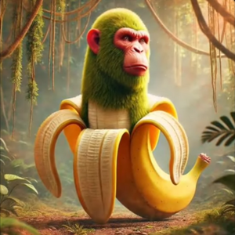
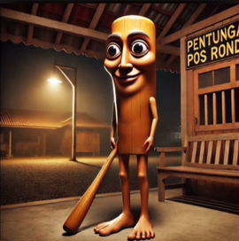
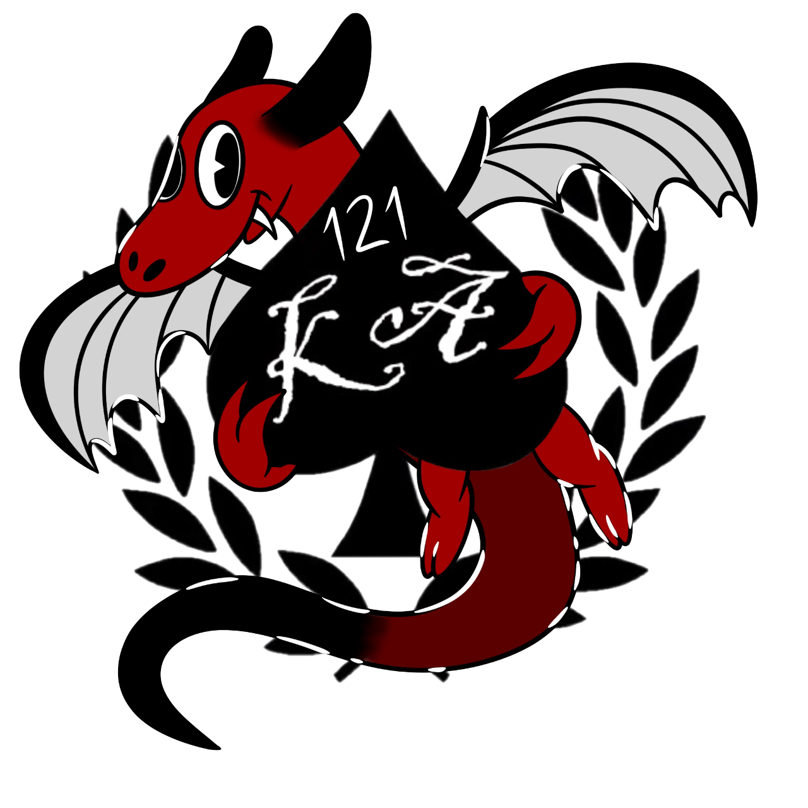
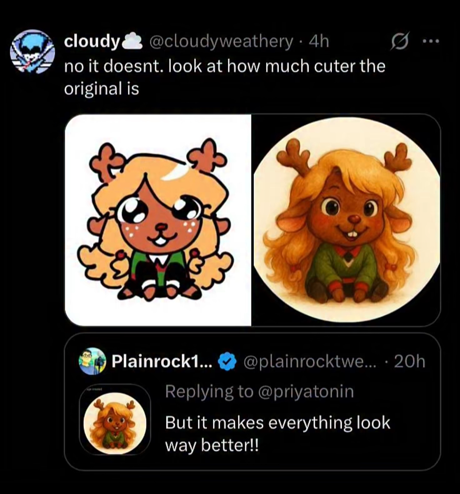
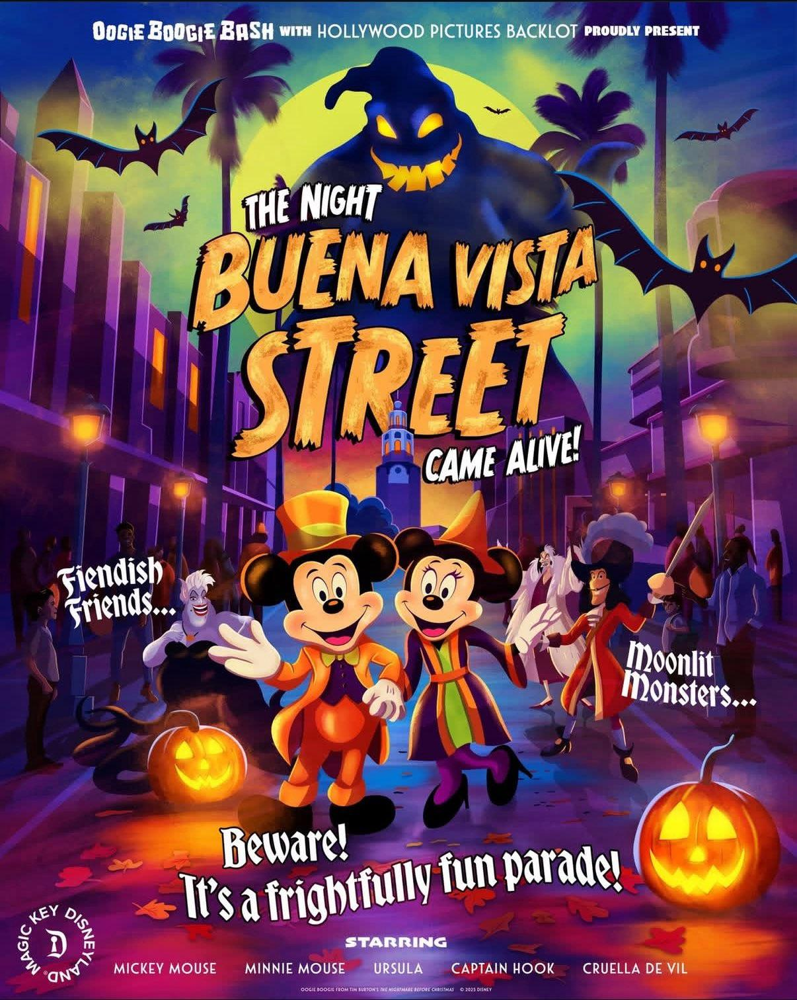
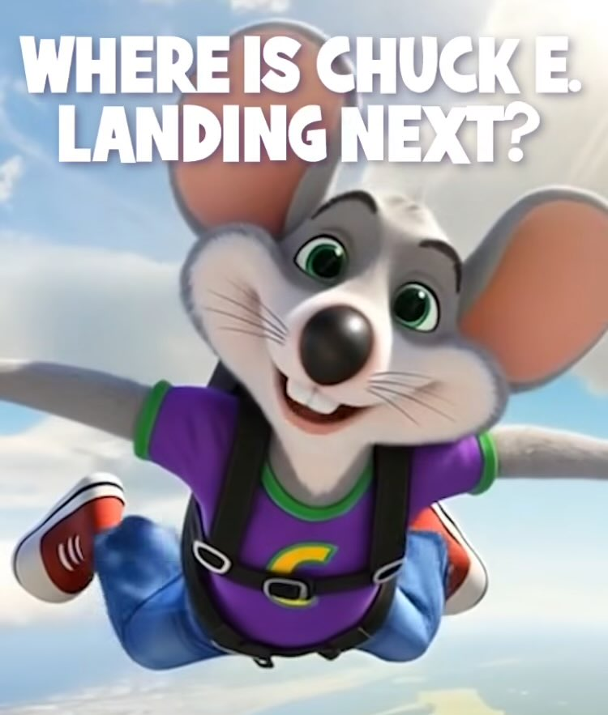
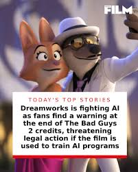

Have you ever saw an image on the internet and thought it looked too good? That's most likely the work of AI. AI has had the ability to generate images for years now, but how do they look so passable as human? AI generated images used to be super noticable that it was not the work of humans such as irregular hands or impossible physics on the character or background. But with hundereds of users always generating images, the AI learns, the AI grows, and now you're looking at an image where those initial flaws are no longer there, but it still has that AI touch to it. AI generated images have many stand out points, but some can be so good to where it's questioned "Is this AI?"
When looking at an image, here's some things to keep in mind to see if the image is AI generated or was done by a human
AI generated images have a very distinct feature to them when it comes to color, the colors are vibrant, the lighting is bright, the shadows look exaggerated. But humans can do that too, so how is it obvious that it's AI? Take a look at the Italian Brainrot images, these images depict a mixture of two or more things and makes these anthropromorphic. The names typically mean nothing and are just jumbled up garbage and sometimes contain a play around their design such as Bombardiro Crocodilo, a mix of a bombing plane used for wars and a crocodlie, or Chimpanzini Bananini, a mix of a chimpanzee and a banana. Thes creatures are put in random locations where the lighting is heavy on the character to show them as the center of attention. Looking closely though, you can spot the AI flaws. Take Tung Tung Tung Sahur as an example, your eyes are drawn to the character, but look at the sign behind him, can you even read what it says? The text is in no form of eligible language. These images became popular for the strange aspect that followed them. They're known as "Italian Brainrot" because the images are narrated with the background of the character is spoken in Italian. To English speakers, this is funny to see an AI images with eerie music playing with an AI voice rambling in Italian. For the most part, these narrations wouldn't make much sense similar to the image, but there are a few that are hiding a nasty secret behind a language barrier. The most infamous are Tralalero Tralala, a shark wearing sneakers, that is calling high religous figures like God or Allah names or saying "fuck them" and Bombardiro Crocodilo, that is the embodiment of a war weapon.


Everyone knows AI generated images have features on or around a character that seem off, but what about the character themselves? Look closely at the faces of the character being drawn, doesn't it seem off? Human artists make characters feel expressive all the time with their face, but they also incorporate body language as well. When a character is excited, artists would draw a smile on their face, going from ear to ear, positioning their body slightly bent with their arms out or on their face to show just how excited they are. AI would get the facial features down to giving them a smile for excitement, but would make their body still or stiff, making the emotion feel soulless. Rarely ever does AI incorporate both of these features. Take this image of Noelle from Deltarune, the original image originated from an artist who simply drew Noelle sitting down looking at the viewer. The whole purpose of the image was to look cute and innocent, which accurately represents how Noelle is in the game. When the same image was ran through an AI gereator, all of the emotion Noelle originally showed was smoothed out and her colors were washed. Noelle is no longer looking at the person, taking away the feeling that Noelle is even feeling any sort of emotion.

With the rise of AI Art becoming more popular, large corporations are obviously going to take a gander at the possibilites AI Art has to offer, and when they realize that AI Art can save time and money, why wouldn't they use it? From the reputation destroyers AI Art can do. Companies such as Coca-Cola, Disney, and Chuck E. Cheese are a few who've shown the public their AI usage, and all three companies were instantly lashed out on by the public with arguements like "Don't you have Graphic Artists who would do this better?" and "You have the money to hire actual artists"



However, on the opposite end of this AI usage, ther are some major companies who are against the usage of AI, as it takes away from those who've built a career around graphic design and video editing. Companies like Universal and Dreamworks have put notices at the ends of recent movies like Jurassic Park: Rebirth and Bad Guys 2 saying that using these films to help train AI was strictly prohibited. The way these companies are portraying AI usage and these movies is similar to piracy laws.
